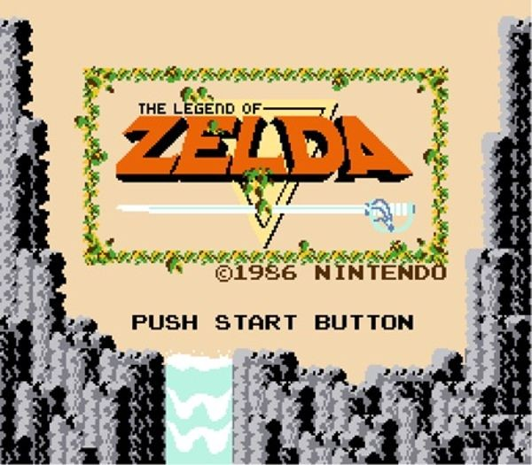
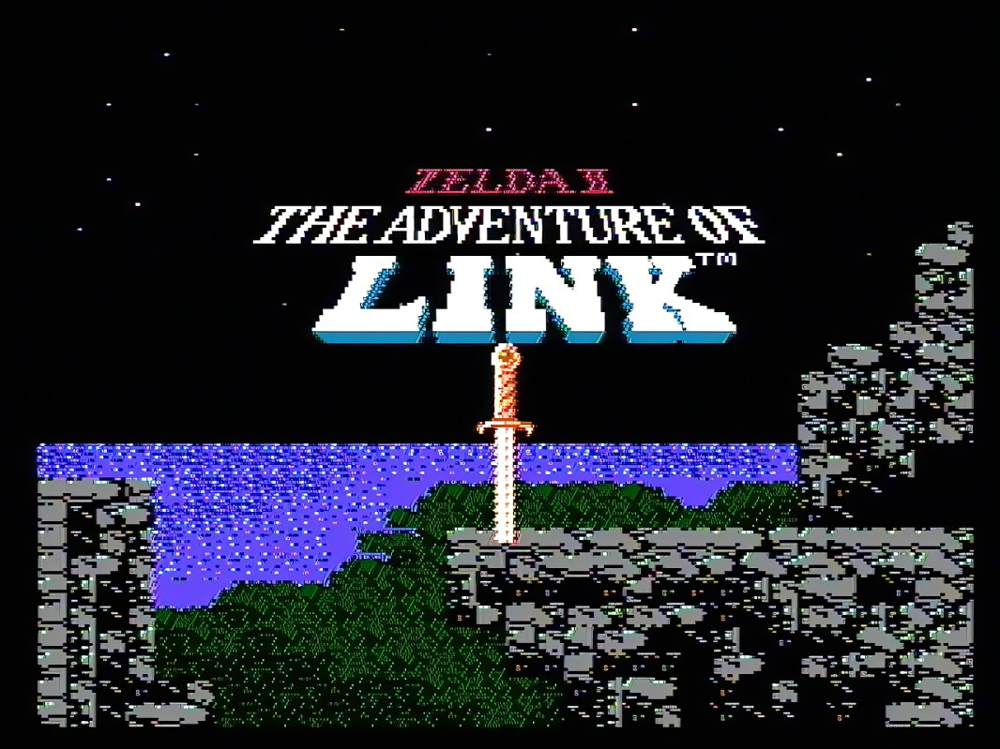

Games
introduction to the games
New to The Legend of Zelda series? Here are some recommendations to get you started! If you want to go in a chronological order, you would play Skyward Sword then Minish Cap then Four Swords and then Ocarina of Time. After that the timeline splits off into three so you can find your own games from there. However, you do not have to play chronologically for the games to make sense. I started with Ocarina of Time then went to Twilight Princess. I would always recommend people to play Ocarina of Time if you can't stand older graphics then play Twilight Princess or Skyward Swords, those are my personal recommendations.
Game 1: The Legend of Zelda
the first game is simple enough The very first Legend of Zelda game puts you in the shoes of Link, a hero tasked with saving the princess, Zelda. The evil Ganon has kidnapped her and hidden her somewhere in the vast fantasy world of Hyrule. To triumph, Link must explore a sprawling overworld, traverse treacherous dungeons, and collect special fragments of a powerful artifact called the Triforce. This artifact is said to grant the wishes of its holder, and Link needs its strength to defeat Ganon and save Zelda.
game 2: The Legend of zelda 2: The adventure of link
Following his victory over Ganon, Link finds Princess Zelda cursed into a deep sleep. To awaken her, Link must embark on a new quest to recover the Triforce of Courage. This legendary artifact lies hidden within six palaces scattered across Hyrule. Link will need to explore a vast overworld, overcome dungeons teeming with enemies, and acquire magical spells and weapons to break the curse and restore peace to the kingdom.